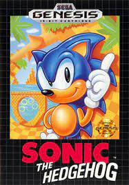

COMIENZO DE LA ERA DE LOS 8-16 BITS
- 1990-2000
- 2000-actualidad
- 1980-1990
- Regreso al inicio
Despues de la primera epoca de el comienzo de los videojuegos, comenzaron a ser mas conocidos y a empezar a convertirse en productos mas comerciables, enfocados al entretenimiento, desarrollando un claro avance tecnologico haciendo que empezar a crearse juegos mas complejos pero por lo mismo mas divertidos y haciendo que esta epoca comience a quedar en la historia por los grandes clasicos que se desarrollaron durante la epoca.
- 1985- Nintendo lanzó Super Mario Bros., que se convirtió en un icono de la cultura pop y en uno de los videojuegos más vendidos de todos los tiempos.

- 1989- Sega lanzó la Sega Genesis (Mega Drive fuera de América del Norte), compitiendo con la NES de Nintendo.

- 1991- Sonic the Hedgehog fue lanzado para Sega Genesis, convirtiéndose en la mascota de Sega.
